ドラウグル Draugr
英語版 CrawlWiki の記事「Draugr」(0.34 向け、2026-10-01 版)の翻訳です。原文の著者は編集履歴をご覧ください。
| ドラウグル Z | |
|---|---|
| HP | 平均 5.5 * HD
|
| HD | Original
|
| XP | Original / 4
|
| 速度 | Original
|
| AC | Original + 10
|
| EV | Original - 7
|
| 意志力 | 6.66 * HD
|
| 攻撃1 | (5 + 4 * HD / 3) * 0.8 打撃:破滅
|
| 攻撃2 | 元のモンスターのほかの攻撃(0.8倍)…
|
| 耐性 | rC++ rPois+++ rDrown rMiasma rN+++ rTorm |
| 弱点 | 神聖 |
| 生息地 | 陸上 |
| 知能 | 無知性 |
| 使用 | 初期装備 扉を開ける |
| 分類 | アンデッド |
| 体格 | 小さい |
| 種類 | ドラウグル、ドラウグル |
| フラグ | 再生しない 邪悪 呼吸しない |
template:monster の写しで、MediaWiki のプロパティは指定していない。 </noinclude>
| 流木と砕けた骨でできた、縄張り意識の強い節くれ立った塊だ。生者への恨みが長い時をかけてその亡骸をねじ曲げ、武器を振るい恐ろしい呪いを撒き散らすことのできる怪物の姿に変えた。 |
基本情報
ドラウグルは骨だけになった派生アンデッドで、節くれ立った木の手足が生えており、それで武器を持てる。生前の姿と比べると、生きていたころの攻撃に加えて破滅をもたらす攻撃を持つ。
- 破滅をもたらす攻撃のダメージ: 5 + 4*HD / 3 で、そこからさらに20%減らされる。HD が高いほど与える破滅も大きい。
ドラウグルはおもに地下墓地と太古の霊廟で、死の騎士の群れに加わってうろついている。アンデッドを題材にしたヴォールトの一部としてなら、迷宮の中ほどから出てくることもある。HP は自然回復せず、階段を移動できず、呪文や能力はすべて失っている。リーの瞬間解体術がよく効く。
ドラウグルの見分け方
元になったモンスターが違えば能力値も違うドラウグルになるが、Crawl はそれらをひとまとめに扱いがちなので、ひと目で見分けるのは難しい。コンソール版では大きさに応じて z か Z で表示される。タイル版ではドラウグルの種類ごとにいくつか別のタイルが用意されているが、それでもひとつのタイルに多くのモンスターがまとめられている。いずれにしても、戦う相手が何なのか正確に知りたければ、x を押してそのドラウグルにカーソルを合わせればよい。
タイル版でのドラウグルの区分は次のとおり。
| タイル | 種類 | タイル | 種類 |
|---|---|---|---|
| 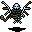 |
コウモリのドラウグル | 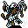 |
鳥のドラウグル |
| 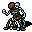 |
セントールのドラウグル | 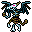 |
ドラコニアンのドラウグル |
| 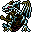 |
ドラゴンのドラウグル | 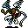 |
ドレイクのドラウグル |
| 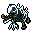 |
魚のドラウグル | 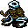 |
蛙のドラウグル |
| 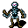 |
人型のドラウグル | 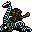 |
ヒドラのドラウグル |
| 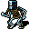 |
ジャガーノートのドラウグル | 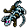 |
トカゲのドラウグル |
| 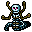 |
ナーガのドラウグル | 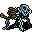 |
四足獣のドラウグル |
| 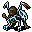 |
翼のある四足獣のドラウグル | 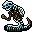 |
ヘビのドラウグル |
| 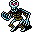 |
トロルのドラウグル | 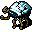 |
亀のドラウグル |
| 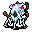 |
醜きもののドラウグル | 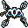 |
X のドラウグル |